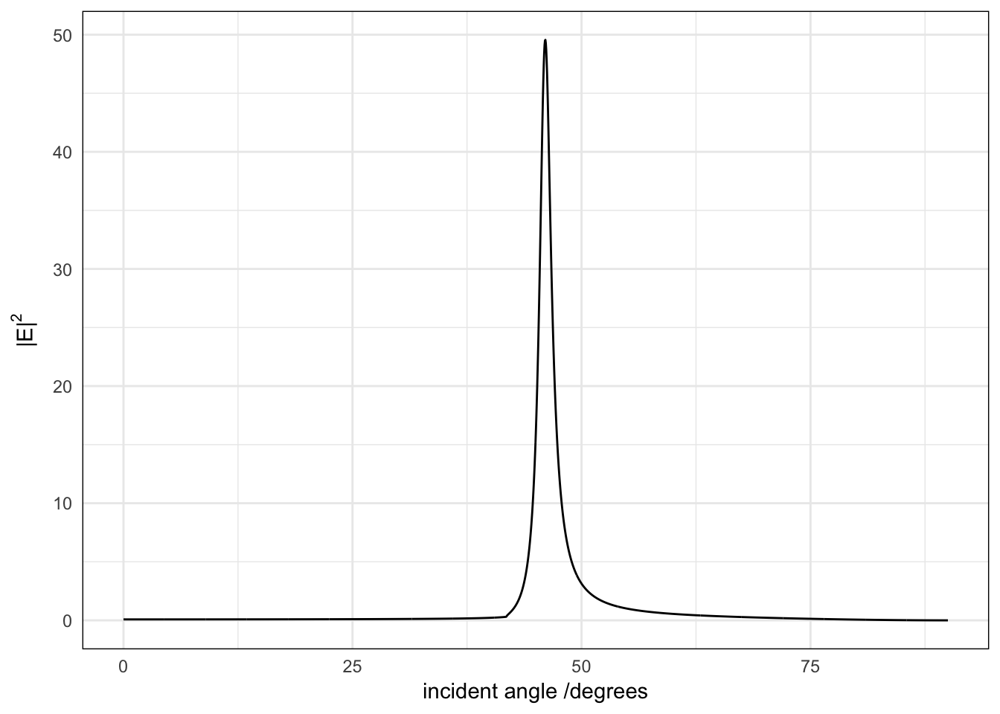
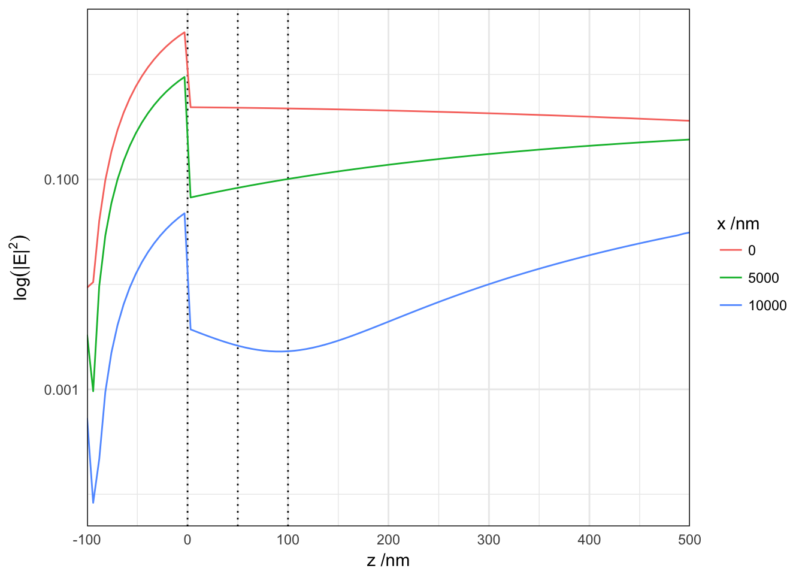
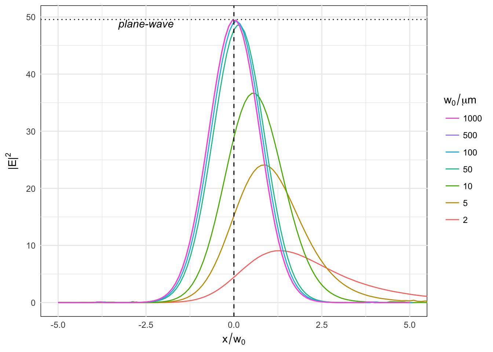
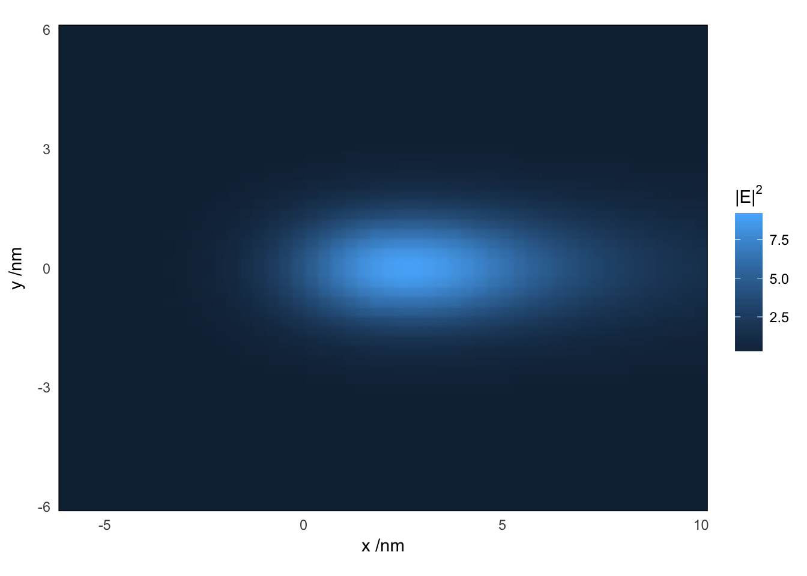

baptiste Auguié – 23 February, 2017
Using the angular spectrum decomposition of a gaussian beam in a bundle of plane waves, the near-field profile is calculated on the transmitted side of a thin metal film illuminated under total internal reflection.
First, we model the structure with plane-wave illumination, and find the angle corresponding to maximum field enhancement (coupling to SPPs in the Kretschmann configuration).
struct <- list(wavelength=632.8,
thickness=c(0,50,50,0),
epsilon=c(1.5^2, epsAu(632.8)$epsilon, 1.1^2, 1.0^2))
## first, check the plane wave result
results <- multilayer(epsilon=as.list(struct$epsilon),
wavelength=struct$wavelength, thickness=struct$thickness, d=1,
angle=seq(0, pi/2, length=2e3), polarisation='p')
enhancement <- results$Mr.perp[[2]] + results$Mr.par[[2]]
maxi <- max(enhancement, na.rm=T)
spp <- results$angle[which.max(enhancement)]
qplot(results$angle*180/pi, enhancement, geom="line")+
labs(x="incident angle /degrees", y=expression("|E|"^2)) ## Depth profile
xyz <- as.matrix(expand.grid(x=c(0, 5000, 10000), y=0,
z=seq(-100, 500, length=100)))
res <- gaussian_near_field_layer(xyz, epsilon=struct$epsilon,
wavelength=struct$wavelength,
thickness=struct$thickness,
w0=5e3, alpha=spp, maxEval=500)
xyz <- data.frame(xyz, field=res)
ggplot(xyz, aes(z, field, colour=factor(x)))+
geom_vline(xintercept=cumsum(struct$thickness), linetype="dotted") +
geom_line() + scale_y_log10()+
scale_x_continuous(expand=c(0,0))+
labs(x=expression("z /nm"), y=expression(log("|E|"^2)),
colour=expression("x /nm"))  We observe that the field decays exponentially away from the gold/dielectric interface (\(z>50\)nm) with the same characteristic distance across the beam profile. The discontinuity at \(z=100\)nm occurs because of the transition between two dielectrics with slightly different refractive index (1.1 and 1.0, respectively).
The detrimental effect of the beam size on the field enhancement can be quite dramatic, as soon as the spread of incident angles causes the coupling to SPPs to deteriorate. Here we simulate the LFIEF for silver, with a beam waist varying from 1mm down to 2 microns.
simulation <- function(w0=10){
w0 <- w0*1e3
xyz <- as.matrix(expand.grid(x=seq(-5*w0, 5*w0+5000,length=100), y=0, z=51))
res <- gaussian_near_field_ml(xyz, epsilon=struct$epsilon,
wavelength=struct$wavelength,
thickness=struct$thickness,
w0=w0, alpha=spp, maxEval=600)
data.frame(xyz, field=res)
}
params <- data.frame(w0=c(2, 5, 10, 50, 1e2, 500, 1e3))
all <- mdply(params, simulation)
ggplot(all, aes(x/w0/1000, field, group=w0, colour=factor(w0)))+
geom_line() +
geom_vline(aes(xintercept=0),lty=2) +
geom_hline(aes(yintercept=maxi),lty=3) +
annotate("text", label="plane-wave", y=maxi, x=-2.5, vjust=1, fontface="italic") +
labs(x=expression(x/w[0]), y=expression("|E|"^2),
colour=expression(w[0]/mu*m)) +
coord_cartesian(xlim=c(-5,5)) + theme_minimal()+
guides(colour=guide_legend(reverse=TRUE)) +
theme(panel.background=element_rect(fill=NA))
We can calculate the field at a grid of points in 2D or 3D. Here is the result for a slice at \(z=51\)nm, for a beam waist of 2 microns (poor coupling).
w0 <- 2000
xyz <- as.matrix(expand.grid(x=seq(-3*w0, 5*w0, length=50),
y=seq(-3*w0, 3*w0, length=50),
z=51))
res <- gaussian_near_field_ml(xyz, epsilon=struct$epsilon,
wavelength=struct$wavelength,
thickness=struct$thickness,
w0=w0, alpha=spp, maxEval=600)
m <- data.frame(xyz, field=res)
ggplot(m, aes(x/1e3, y/1e3, fill=field))+
geom_raster(interpolate=TRUE) +
scale_x_continuous(expand=c(0,0))+
scale_y_continuous(expand=c(0,0)) +
labs(x=expression("x /nm"), fill=expression("|E|"^2),
y=expression("y /nm")) +
coord_fixed()